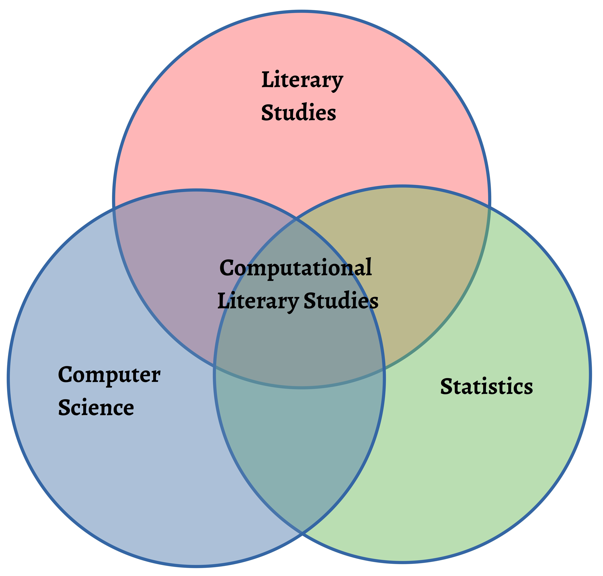
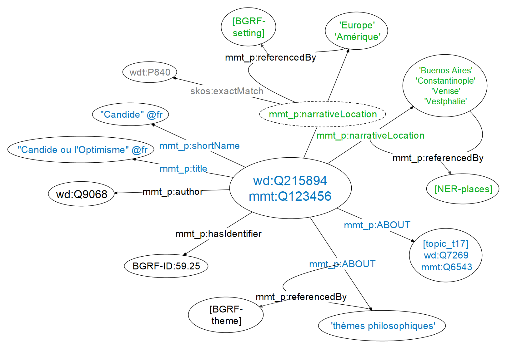
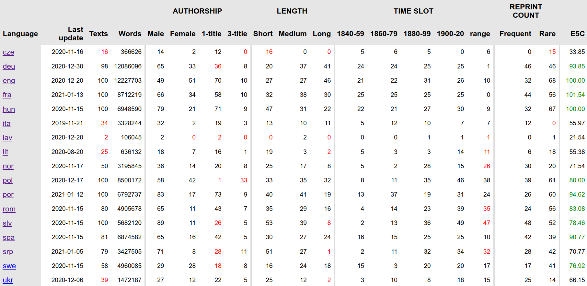
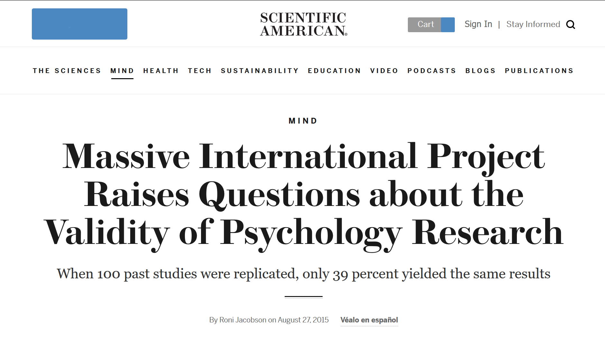
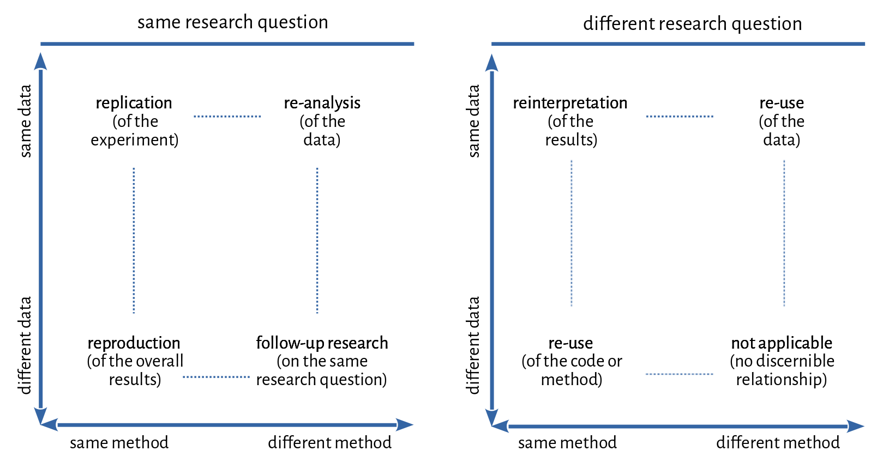

# Current Challenges<br/>in Computational Literary Studies <br/> <hr/> <br/>Christof Schöch (Trier University) <br/><br/> <hr/> <p><strong>slides: <a href="https://dh-trier.github.io/cls/#/">dh-trier.github.io/cls/</a></strong></p> <p><strong><emph><a href="https://su.powerinit.com/Data/Event/EventTemplates/2602/?EventId=879">Digital Humanities Now</emph> | Stockholm University | 27-29 Jan 2021</a></strong></p> <hr/> <img height="60" data-src="img/basics/uni-trier.png"> :: - Hello, everyone. - Thank you for the invitation to this wonderful event - I'm very happy to be able to contribute to it. -- #### Thanks to everyone involved <small> * Keli Du * Cora Rok * Julia Dudar * Maria Hinzmann * Benjamin Raue * Julia Röttgermann * Anne Klee * Katharina Dietz * Moritz Steffes * Maciej Eder * Carolin Odebrecht * Lou Burnard * Martina Scholger * Fotis Jannidis * Antonija Primorac * Roxana Patras * Katja Mihurco Poniz * and many more... </small> :: - All of my research is very collaborative - I'd like to acknowledge everyone's crucial contributions here. -- ## Overview 1. [Computational Literary Studies](#/3) 1. [Operationalization](#/4) 1. [Metadata](#/5) 1. [Diversity](#/6) 1. [Reproducibility](#/7) :: - Before I get started with the four challenges, I would like to briefly introduce the field of Computational Literary Studies - And I will then speak about four major, high-level challenges I see for the field - I believe it is really important that these challenges continue to be addressed, going into the future -- ## Computational<br/>Literary Studies --- ### Many terms, one field? * Stylometry * Literary and Linguistic Computing * Distant Reading * Computational Stylistics * Digital Literary Stylistics * Computational Literary Studies :: - CLS has, under various names, been around since the early 1960s - Mosteller and Wallace or Enkvist with quantitative methods of "non-traditional authorship attribution" - Then the big wave of "Distant Reading", in the wake of Franco Moretti - And what I consider the current best designation, CLS - Not limited to style or authorship, but literary concerns more generally - Not just digital, but computational: machine learning, statistics, quantitative approaches --- ### Computational Literary Studies </img> :: - Computational Literary Studies (CLS) is a subfield of Digital Humanities concerned with using methods from Computer Science and Statistics for the investigation of literary texts. - CLS has a long tradition within Digital Humanities. - Research questions in CLS are in part those of established literary studies, in part those arising from the transposition of methods from Computer Science and Statistics into the literary domain. - Indeed, the four challenges are not those of literary studies, but really those of CLS itself -- ## Challenge 1:<br/><br/>Operationalization --- ### What is meant by operationalization? * Creates an explicit<br/> link between concepts and formal features <!-- .element: class="fragment" data-fragment-index="1" --> * Makes a research<br/> question or a hypothesis computable and verifiable <!-- .element: class="fragment" data-fragment-index="2" --> * Creates increased complexity, mainly through decomposition <!-- .element: class="fragment" data-fragment-index="3" --> * But also makes that complexity more manageable <!-- .element: class="fragment" data-fragment-index="4" --> * Many examples <!-- .element: class="fragment" data-fragment-index="5" --> * subgenres * canonicity * complexity * distinctiveness --- ### Example: "Distinctiveness"<br/>in the *Zeta and Company* project <img height="400" data-src="img/zeta-project.jpg"></img> <br/>https://zeta-project.eu/en/ :: - This is a project about measures of distinctiveness - Distinctiveness, also called "keyness" in linguistics, refers to words, or other features, that are characteristic of a group of texts when comparing it to another group of texts - We want to model, implement, evaluate, and use measures of distinctiveness --- ### Subgenres of the contemporary French novel <b>crime fiction</b> (Gallimard, Série noire): <img height="180" data-src="img/serie-noire.jpg"></img> <br/> <b>science fiction</b> (Denoël, Présence du futur): <img height="180" data-src="img/presence-futur.jpg"></img> :: - Our data is the contemporary French novel - We focus on popular subgenres like crime fiction and science fiction - Here you see some book covers for crime fiction and science fiction --- ### What is distinctiveness? * (Qualitative) concepts <!-- .element: class="fragment" data-fragment-index="1" --> * aboutness * salience * discriminativity * etc. * (Quantitative) measures <!-- .element: class="fragment" data-fragment-index="2" --> * log-likelihood ratio * t-test * Burrows Zeta * etc. :: - (qualitative) concepts: - Aboutness: words that express the content of the subgenres - Discriminativity: words that help distinguish between subgenres - Salience: words that readers notice when reading novels from the subgenre - (quantitative) measures - log-likelihood (CL): compares frequencies across groups - t-test (Statistics): compares frequency distibutions - Zeta (CLS): compares the degree of dispersion of words --- ### Key issue: concepts vs. measures * How do qualitative concepts and quantitative measures relate? * What are the key statistical properties of the measures? * Do different measures cover different aspects of distinctiveness? * How do you evaluate measures for specific targets? * discriminativity: classification task * salience: (comparison with reader survey) * aboutness: (proportion of content words) :: - **Key issue**: - how do measures and concepts relate to each other? - t-test has a bias for function words, and is related to distinctiveness - Burrows Zeta has a bias for content words, and is related to aboutness - How does this affect the results? - These properties need to be established before using such measures. - We do this through systematic evaluation with various techniques - Note that no direct gold standard is available - But also: how do we combine individual results, using different measures? -- ## Challenge 2:<br/><br/>Metadata --- ### Why is metadata crucial? * Small, well-understood corpora:<br/>metadata is easy to generate, less needed <!-- .element: class="fragment" data-fragment-index="1" --> * Large, unexplored corpora:<br/>metadata is crucial, hard to generate <!-- .element: class="fragment" data-fragment-index="2" --> * Why is it so crucial? <!-- .element: class="fragment" data-fragment-index="3" --> * to know the population: sampling * to go beyond the known canon * for interpreting quantitative results :: - First wave of CLS used relatively small corpora (dozens, sometimes a few hundred texts) - Current wave of CLS is about ever larger text collections - First thousands, now millions of books: HathiTrust: now 17 million volumes - So metadata also helps us do analyses beyond the canon (see challenge #2: diversity) - (a) Without a documentation of the statistical population, you can't create representative samples - (b) When you can't read the documents in your corpus, you need metadata to explain results --- ### Challenge of metadata * CLS needs a complete record of literary production <!-- .element: class="fragment" data-fragment-index="1" --> * CLS needs relevant, detailed, accurate metadata on texts <!-- .element: class="fragment" data-fragment-index="2" --> * author: gender, related authors, etc. <!-- .element: class="fragment" data-fragment-index="1" --> * setting: space, time <!-- .element: class="fragment" data-fragment-index="2" --> * content: themes, plot, protagonists <!-- .element: class="fragment" data-fragment-index="3" --> * type: subgenre <!-- .element: class="fragment" data-fragment-index="4" --> * properties: e.g. proportion of direct speech, <br/>narrative perspective <!-- .element: class="fragment" data-fragment-index="5" --> :: - First need: complete documentation of literary production (population) - Second need: relevant, detailed, accurate metadata on individual texts - But: Library catalogs usually don't have these - So we need to generate metadata ourselves! (Agenda) --- ### Example: *Mining and Modeling Text* <img height="450" data-src="img/mimotext-page.jpg"></img> <br/>https://mimotext.uni-trier.de/aktuelles/english --- ### Generate metadata from various sources <img height="500" data-src="img/mimotext-candide.jpg"></img> <br/>Example: *Candide* by Voltaire :: - from bibliographies and library catalogs - from scholarly publications - from primary texts --- ### Wikidata for Literary History </img> <br/>Example: Themes and setting of *Candide* by Voltaire :: - Then, model it as an information network - In the form of Linked Open Data - Goal: Wikidata for Literary History -- ## Challenge 3:<br/><br/>Diversity :: - The DH open up an opportunity for diversity - We have the chance to base our research on more than just a few most famous works - in CLS, this means we can better understand the dynamics of literary history - And better understand the meaning of literature for people --- ### Distant Reading for European Literary History <a href="img/map-of-action-members.html"><img height="450" data-src="img/map-of-action-members-logo.jpg"></img></a> <br/>https://distant-reading.net :: - I would like to illustrate the challenges of this in CLS by speaking about a project called "Distant Reading for European Literary History" - The key aim of this project is to create a multilingual corpus of novels - 100 novels from as many different European languages as we can - At the moment, we are working on 17 different languages --- ### Dimensions of diversity * In corpus building and text analysis <!-- .element: class="fragment" data-fragment-index="1" --> * Literary production in multiple languages * Highly-canonized and forgotten novels * Gender balance in authorship * Wide range of kinds of novels * In the community we create <!-- .element: class="fragment" data-fragment-index="2" --> * Diversity of career stages * Gender balance * Researchers from less research-intensive countries :: - Here we connect with work by Katherine Bode on corpus building - In this project, there are several dimensions of diversity that are relevant - regarding corpus building and text analysis (name them) - regarding the community we create in the project (name them) - Very important to me: diversity not for the people, but with the people! - In this sense, this is really a "grass-roots" project - Digitization tends to be non-diverse (!): driven by canonicity, focused on few authors --- ### Key challenge: the "diversity paradox" <a href="https://distantreading.github.io/ELTeC/"></img></a> <br/>https://distantreading.github.io/ELTeC/ :: - Paradox: - We want to encourage a diversity of languages, including smaller literary traditions - And we want to encourage a diverse corpus composition (women, non-canonized, early) - But: for smaller languages, diverse composition is hard! - So: by pushing on one side, we lose on the other side - We need to balance both -- ## Challenge 4:<br/><br/>Reproducibility --- ### The reproducibility crisis </img> <br/>[Roni Jackson, "Massive International Project...", 2015](https://www.scientificamerican.com/article/massive-international-project-raises-questions-about-the-validity-of-psychology-research/) :: - For years, there has been discussion of a reproducibility crisis in psychology or biomedicine - now, it is also relevant in computational linguistics and computer science - For example, the NeurIPS conference now has a "reproducibility chair" - This is also becoming highly relevant to DH and CLS - Evidence of this is the Paper by Nan Z. Da, "The Computational Case agains CLS" (2019) --- ### A typology of reproducing research </img> <br/>(Schöch 2020) :: - But what does reproducible research even mean? - In CLS, there are lots of possible relations between previous and current researrch - One way to get a better grip of this issue is through a typology - We just focus on the left part (same research question) - But the data can be similar or different; the method can be similar or diffferent - In each configuration, there are different requirements - But essentiallly, making data and code freely available to others is crucial --- ### Consequences for CLS * Structurally encourage and facilitate sharing of corpora and code <!-- .element: class="fragment" data-fragment-index="1" --> * Recognize corpus design and code maintenance as scholarly work <!-- .element: class="fragment" data-fragment-index="2" --> * Develop solutions for sharing of in-copyright materials:<br/> "derived features/formats" (e.g. Hathi Trust Extracted Feature Dataset) <!-- .element: class="fragment" data-fragment-index="3" --> * Develop reporting standards for research <!-- .element: class="fragment" data-fragment-index="4" --> * But also: recognize the value of reproducing research (small steps!) <!-- .element: class="fragment" data-fragment-index="5" --> :: - Would love to hear from you -- ## Conclusion --- ### Four Challenges of CLS 1. Operationalization: "deconstruction" and reconstruction of concepts and measures <!-- .element: class="fragment" data-fragment-index="1" --> 1. Metadata: methods, and partnerships with libraries, to generate metadata for very large corpora <!-- .element: class="fragment" data-fragment-index="2" --> 1. Diversity: increase diversity in research objects and the research community; find ways out of the diversity paradox <!-- .element: class="fragment" data-fragment-index="3" --> 1. Reproducibility: enable and encourage sharing of data, code, methods <!-- .element: class="fragment" data-fragment-index="4" --> --- # Thank you for your kind attention <br/><br/> <br/><br/> <br/><br/>Twitter: <a href="https://twitter.com/christof77">@christof77</a> <br/><br/> <br/><br/> <hr/> <small> <br/>Chair for Digital Humanities, Trier University: <a href="https://www.dh.uni-trier.de/">dh.uni-trier.de/</a> <br/>Trier Center for Digital Humanities: <a href="https://www.tcdh.uni-trier.de/en/">tcdh.uni-trier.de/en/</a> <br/> <br/>Licence: <a href="https://creativecommons.org/licenses/by/4.0/">Creative Commons Attribution (CC BY)</a>, 2020. </small> <hr/>